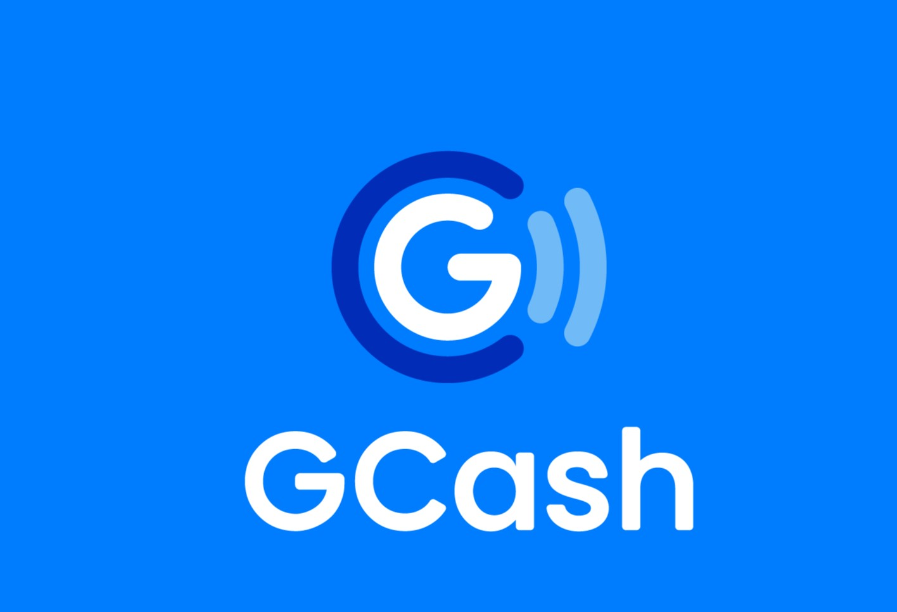
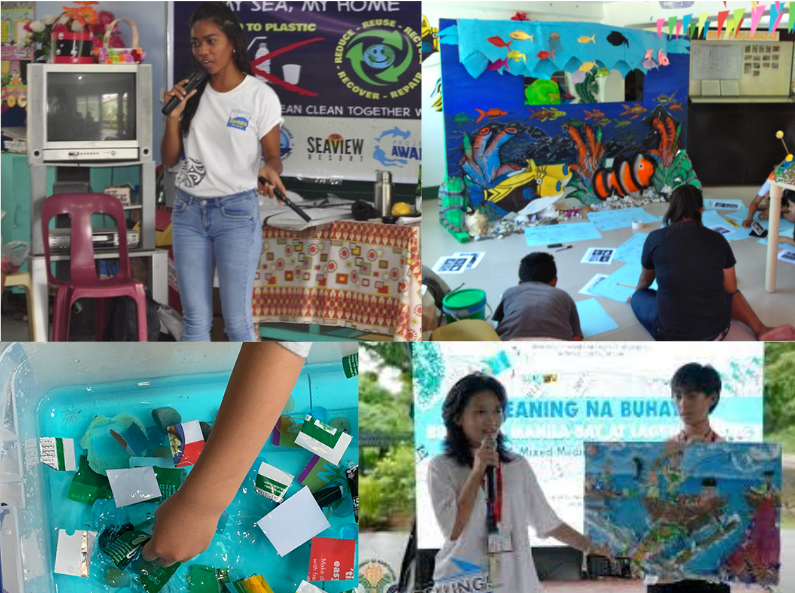

Your generosity really helps make our mission possible. Every donation, whether it’s big or small, makes a real difference, and we’re honestly so grateful for your kindness. Your support means a lot to our team, and it also helps us continue the work we’re doing for our ocean. Thank you for believing in what we do, for standing with us, and for helping us keep moving forward. We truly couldn’t do this without all of you.
Donations
Personal Information
Payment
Credit Card Number
Proceed
Or

Our Mission
We aim to create cleaner, healthier coastlines by empowering young people to take action. Through organized beach clean-ups, environmental education, and hands-on community involvement, we work to reduce pollution, protect marine life, and inspire lifelong stewardship.

Your Impact
- 100+ student volunteers enroll in our programs each year
- 5 partner schools, including Manila Coast High School, Balayan Science Academy, and Cebu Shoreline Institute
- Monthly coastal workshops focused on marine conservation and waste reduction
- Leadership training and science invention programs
- Clean-up supplies and safety gear provided to all youth volunteers
- Ocean Conservation & Beach Clean Up for Kids. (2023). Seek Sophie. https://www.seeksophie.com/experiences/singapore-wild-stories-storytelling-craft-beach-clean-up-o1ojq1wg54
- brunei.pe. (2022, September 13). FILIPINO CHILDREN TAKE PART IN BEACH CLEAN-UP. Dfa.gov.ph. https://bruneipe.dfa.gov.ph/newsroom/embassy-news/552-filipino-children-take-part-in-beach-clean-up
- Berawa Beach Cleanup by R.O.L.E. Foundation & Motel Rocks | ZeroWaste Center. (2024). Zerowastecenter.org. https://zerowastecenter.org/berawa-beach-cleanup-by-r-o-l-e-foundation-motel-rocks/19239/
- Giacomo. (2017, August 2). Moalboal Community and Beach Clean Up. SEVENSEAS Media. https://sevenseasmedia.org/moalboal-community-and-beach-clean-up/
- clean-up activity | Iloilo Provincial Government. (2017). Iloilo.gov.ph. https://www.iloilo.gov.ph/en/taxonomy/term/512
- (2025). Vecteezy.com. https://www.vecteezy.com/vector-art/55412984-modern-social-media-and-communication-platform-icons-in-various-styles-and-colors